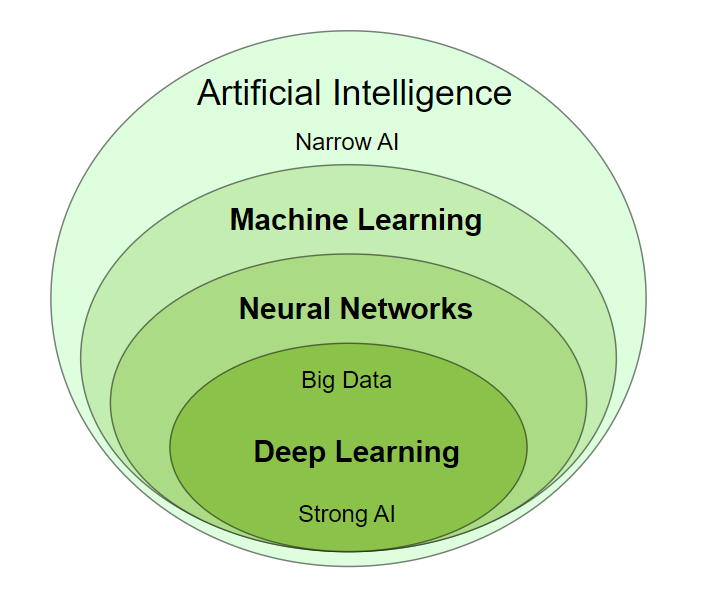

Artificial Intelligence is also called Machine Intelligence and Computer Intelligence.
Artificial Intelligence is a scientific discipline embracing several Data Science fields ranging from narrow AI to strong AI, including machine learning, deep learning, big data and data mining.
Narrow Artificial Intelligence is limited to narrow (specific) areas like most of the AI we have around us today:
Narrow AI is also called Weak AI.
Weak AI: Built to simulate human intelligence.
Strong AI: Built to copy human intelligence.
Strong Artificial Intelligence is the type of AI that mimics human intelligence
Strong AI indicates the ability to think, plan, learn, and communicate.
Strong AI is the theoretical next level of AI: True Intelligence.
Strong AI moves towards machines with self-awareness, consciousness, and objective thoughts.